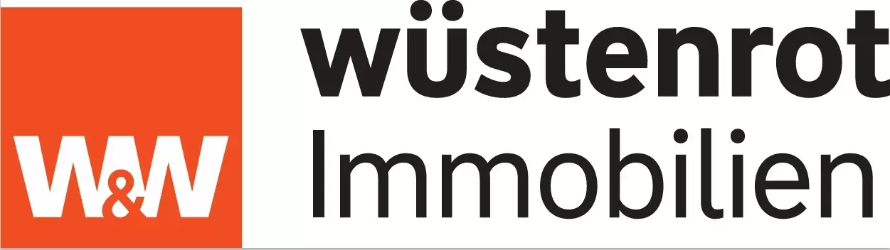

Social Media als Makler.
Was KI möglich macht,
und was nicht.

Die organische Reichweite
auf Instagram schmilzt weg.
Durchschnittliche Reichweite pro Instagram-Post, gemessen über alle Formate.
Im selben Zeitraum sind die Likes pro Post um fast die Hälfte gefallen.
Mehr Posts. Gleiche Zeit.
Weniger Platz für dich.
Mehr Inhalte teilen sich die gleiche Sekunde Aufmerksamkeit — der Algorithmus muss verteilen, jeder einzelne Post bekommt weniger.
Diesen Moment hatten wir
schon öfter.
Plattformen werden enger, dann werden die Werkzeuge besser. Diesmal heißt das Werkzeug KI — ich zeige dir, wie wir damit heute Beiträge bauen, und wohin der Weg führt.
KI heute
Weg führt
der Praxis aussieht
So nutzen wir KI heute.
Wir bewegen uns durch 3 Stufen.
von Hand
parallel nutzen
koordinieren sich
Was kommt als
Nächstes?
Tools sind Werkzeuge.
Agenten sind ein System.
Makler sind perfekt vorbereitet.
Du hast was KI braucht: Struktur, lokale Expertise und kontinuierlich neue Themen.
Ihr müsst es nur noch einsetzen.
Welche Aufgaben können solche
Agenten übernehmen?
Ein Beispiel aus deinem Alltag.
Der Social Media Agent koordiniert.
Post-Bild + Caption + Hashtags — fertig in ca. 45 Sekunden.
📍 Floridsdorf am Wachsen!
Plus 3,8 % im Jahresvergleich — der 21. Bezirk bleibt stabil und gefragt. Wer jetzt verkauft, trifft einen guten Zeitpunkt.
Fragen? Schreib mir — ich begleite dich durch den Prozess.
#wien21 #floridsdorf #immobilien #marktupdate #immobilienmakler
Der Agent handelt eigenständig.
Beste Tageszeit: Mi. + Fr. zwischen 18–20 Uhr
KI-Agenten sind wie ein neuer Mitarbeiter.
Kein Knopfdruck-Tool — ein Sparringpartner.
Infos, Beispiele
gemeinsam optimieren
24/7, wahnsinnig effizient
Der Unterschied: Dieser Mitarbeiter wird mit jedem Tag besser.
Der Vorsprung lässt sich in Monaten messen.
Wir bauen das für die Immobranche.
Objektpostings sind jetzt automatisiert.
Social Media Marketing, Marktberichte, Bewertungen. Viele weitere Schritte stehen an.
Willst du dabei sein?
Schalte unseren Service im onOffice Marketplace frei
und sei von Anfang an dabei.